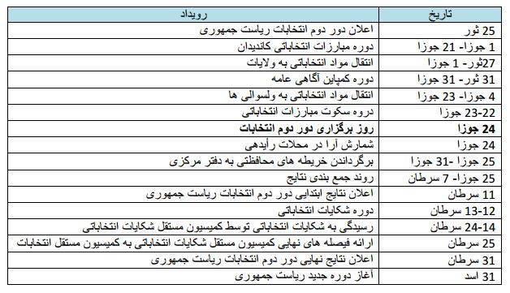

از دور دوم انتخابات ریاست جمهوری در افغانستان چه میدانید؟
هر رأیدهنده واجد شرایط که دارای کارت رأیدهی باشد میتواند رأی خود را در هر محل رأیدهی و در هر زمان ممکن بین ساعت۷ صبح تا ۴ بعد ازظهر به صندوق بیندازد. قبل از ورود به مرکز رأیدهی، لازم است رأیدهندگان کارت خود را به کارمند کنترل کننده قطار نشان دهد.
انتخابات دور دوم چیست و چرا ضرورت دارد؟
به اساس قانون انتخابات افغانستان، یک کاندید برای انتخاب شدن به ریاست جمهوری باید کثریت مطلق آرا را بدست آورد. به همین اساس نامزد برنده باید بیش از نیم آ رای معتبر ریخته شده در صندوقها (۵۰ درصد +۱ رای) را در انتخابات کسب نماید. در صورتی که هیچ یک از نامزدهدا نتواند بیش از نیم آ رای معتبر ریختده شده در صندوقها را بدست آورد، انتخابات دور دوم برگزار خواهد شد.
در دور دوم فقط دو نامزدی که بیشترین رأی را در دور اول انتخابات بدست آورده اند با هم رقابت میکنند. از بین این دو نامزد، نامزدی که بیشترین رأی را در دور دوم برده است رئیس جمهور خواهد شد (ماده ۲۰).
به تاریخ۱۶ حمل [فروردین] سال۱۳۹۳ انتخابات ریاست جمهوری و انتخابات شوراهای ولایتی در افغانستان برگزار شد. به اساس جمعآ وری و شمارش آ را در مرکز ملی شمارش آ را توسط کمیسیون مستقل انتخابات و دریافت مشاوره از کمیسیون مستقل شکایات انتخاباتی، هیچ یک از ۸ نامزد ریاست جمهوری نتوانست اکثریت مطلق آرا را بدست آ ورد.
در نتیجه کمیسیون مستقل انتخابات اکنون قانونا باید دور دوم انتخابات را برگزار نماید.
دور دوم انتخابات ریاست جمهوری سال۱۳۹۳ چه وقت برگزار خواهد شد؟
به اساس برنامه کمیسیون مستقل انتخابات، دور دوم انتخابات ریاست جمهوری به تاریخ ۲۴ جوزای [۲۴ خرداد] سال روان برگزار خواهد شد و تقویم انتخاباتی به شرح ذیل میباشد:

چه اقداماتی برای بهتر شدن طرزالعمل رأیگیری صورت گرفته است؟
۱. تعداد محلات رأیدهی پلان شده افزایش خواهد یافت.
بنا به تمایل رأیدهندگان، همانگونه که درانتخابات ۱۶ حمل [۱۶ فروردین] مشاهده گردید کمیسیون مستقل انتخابات پیش بینی می کند که در کجا جمعیت رأی دهندگان بیشتر خواهد بود و در کجا احتمالا محلات رأیدهی اضافی، ضرورت می باشد. بنابراین تعداد محالت رأیدهی پلان شده از ۲۰۷۷۳ محل رأیدهی در دور اول انتخابات به ۲۳،۳۱۳ محدل رأیدهی در دور دوم افزایش می یابد.
۲. مقدار مواد رأیدهی احتیاطی بیشتر خواهد شد
مواد رأیدهی احتیاطی ۵٪ (۵۱۹ بسته محالت رأیدهی در دفتر مرکزی کمیسیون مستقل انتخابات و ۱۱۶۸ بسته در دفترهای ولایتی) به این معناست که در صورت ضرورت کمیسیون مستقل انتخابات آمادگی دارد تا ۲۴،۴۸۱ محل رأیدهی را به روی رأی دهندگان باز کند. این تغییرات بمنظور کاهش ازدحام رأی دهندگان در مدت رأیدهی صورت گرفته و با افزایش تعداد محلات رأیدهی مدت زمانی که لازم است هر رأی دهنده در صف ایستاد شود تا رأی خود را به صندوق بیندازد نیز کاهش می یابد.
۳. کارمندان متقلب و متخلف و نیز کارمندانی که عملکرد ضعیفی داشته اند جایگزین خواهند شد
بیش ا از ۵۰۰۰ کارمند انتخابات که در ۵۲۵ محل رأیدهی درانتخابات ۱۶ حمل [۱۶ فروردین] به کار گماشته شده بودند در تقلب و تخلف ها دست داشته اند. از استخدام این کارمندان بحیث کارمندان انتخاباتی در دور دوم و یا در انتخابات آینده اکیدا ممانعت بعمل آمده و ممکن است آنان به مراجع عدلی و قضایی معرفی شوند.۴۴۰ کارمند دیگر به شمول چندین هماهنگ کننده ساحوی ولسوالی، نیز به خاطر عملکرد ضعیفشان دوباره به کار گرفته نمیشوند. این اقدامات غرض کاهش تلاشهای تخریب کننده روند انتخابات و حفظ بهتر یکپاردگی نتایج صورت گرفته است.
چه اقداماتی برای بهبود امنیت رأی دهندگان در دست دارید ؟
وزارت داخله و نیروهای امنیت ملی افغان در تسهیل فعالیتهای انتخابدات ۱۶ حمل [۱۶ فروردین] همکاری نزدیک داشتند. ارزیابی های انجا شده توسط وزارت داخله کمک کرد تا خطرات امنیتی شناسایی و کاهش یابد. حضور نیروهای امنیت ملی در سراسر کشور، پیش ا از انتخابات و در طول انتخابات باعث تسهیل مشارکت حدود ۷ میلیون رأی دهنده شد.
کمیسیون مستقل انتخابات و وزارت داخله با بهره گیری از این تجربه و کسب معلومات بیشتر که می تواند در عملیاتهای آنها به کار رود امنیت رأی دهندگان را دردراولویتهای خود قرار می دهد و حضدور نیروهای امنیت ملی نیز در طول دور دوم انتخابات تداوم مییابد.
طرزالعمل های امنیتی در کلیه تأسیسات انتخاباتی تطبیق خواهد شد. هر رأی دهنده قبل از ورود بده مرکز رأیدهی تلاشی می شود. سلاح و یا هر وسیله ای که از آن به عنوان سلاح استفاده میشود اجازه ندارد داخل مرکز رأیدهی شود و یا در محدوده ۵۰۰ متری مرکز رأیدهی باشد مگر اینکه از سوی وزارت داخله جواز داشته باشد.
شهروندان افغان، جامعه و رهبران دینی، کارگزاران سیاسی و رسانه ای باید مسئولیت مدنی را تشویق و از رفتارهای غیر قانونی جلوگیری به عمل آ ورند. تما افغانها مکلف اند رویدادهای تهدید، ارعاب و یا دیگر اعمال غیر قانونی و یا اعمالی که یکپارچگی روند انتخابات را به مخاطره میاندازد را گزارش دهند.
آیا یک رأی دهنده ثبت نام شده می تواند در دور دوم انتخابات شرکت کند حتی اگر در انتخابات ریاست جمهوری ۱۶ حمل [۱۶ فروردین] اشتراک نکرده باشد؟
هر رأی دهنده واجد شرایط که دارای کارت رأیدهی باشد می تواند در انتخابات دور دوم اشتراک کند قطع نظراز اینکه وی در انتخابات دیگر اشتراک کرده باشد یا نکرده باشد.
آیا رأی دهندگان می توانند نامزد دیگری غیر از نامزدی که در انتخابات ۱۶ حمل [۱۶ فروردین] برگزیده بودند، انتخاب کنند ؟
رأیدهندگان از لحاظ قانونی مجاز به حمایت از نامزد منتخب شان می باشند بدون در نظر گرفتن رأی شان در انتخابات دیگر. رأی آنان سری و محرمانه می باشد و رأی دهندگان مجبور نیستند که نامزد مورد نظر خود را به شخص دیگر بگویند.
آیا رأی دهندگانی که به تازگی واجد شرایط می شوند می توانند قبل از انتخابات دور دوم ثبت نام نمایند؟
بخاطر محدودیتهای زمانی، رأیدهندگان جدید قبل از انتخابات دور دوم ثبت نام نمیشوند.
آیا اعتبارنامههای صادر شده برای انتخابات ۱۶ حمل [۱۶ فروردین] برای این دوره هم معتبر است یا اعتبار نامههای جدید ضرورت می باشد؟
تما مشاهدان انتخاباتی و رسانه هایی که از طرف کمیسیون مستقل انتخابات اعتبارنامه سال ۱۳۹۳ را دریافت کردهاند، باید این اعتبارنامهها را نزد خود نگاه دارند و تسهیلات لازم برای ورود آنان به محلاتی که در آن فعالیتهای انتخاباتی انجا می گیرد، فراهم می شود. اما اعتبارنامه های نمایندگان نامزدها از درجه اعتبار ساقط می باشد. فقط نمایندگان دو نامزد رقیب دردور دوم انتخابات اعتبارنامه دریافت می کنند. به این منظور هر نامزد قریب به ۲۵،۰۰۰ اعتبارنامه سفید دریافت می کند. سپس اعتبارنامههای سفید را با درج نام نمایندگانشان تکمیل و عکس آنان را روی اعتبارنامهها میچسبانند (به استثنای نمایندگان اناث). سپس نامزدان اعتبارنامههای تکمیل شده را به کمیسیون مستقل انتخابات ارسال می کنند تا کمیسیون آنها را تأیید و تاپه کند وبدین ترتیب اعتبارنامههای نمایندگان نامزدان از طرف کمیسیون مستقل انتخابات رسما تصدیق می شود. بعد به نامزدان لیست کاملی ی از مراکز رأیدهی داده می شود تا آنان با توجه به لیست، نمایندگان خود را تعیین و حضور آنان را در مراکز رأیدهی متوازن سازند.
طرزالعمل رأی دادن در دور دوم چیست؟
هر رأیدهنده واجد شرایط که دارای کارت رأیدهی باشد میتواند رأی خود را در هر محل رأیدهی و در هر زمان ممکن بین ساعت۷ صبح تا ۴ بعد ازظهر به صندوق بیندازد. قبل از ورود به مرکز رأیدهی، لازم است رأیدهندگان کارت خود را به کارمند کنترل کننده قطار نشان دهد. کارمند کنترل کننده، کارت رأی دهنده را بررسی میکند تا ببیند قبلا نشانی نشده باشد (با شکل مخصوص نشانی (سوراخ) که برای دور دوم معین شده است). کارمند کنترل کننده، انگشتان رأی دهنده را بازرسی می کند تا اطمینان کند که قبلا رنگ نشده باشد.
در داخل محلات رأیدهی، رأیدهنده به سوی مأمور شناسایی هدایت میشود که وی یک بار دیگر کارت رأیدهنده را قبل از نشانی(سوراخ) کردن با شکل مخصوص چک میکند. شماره کارت رأیدهنده را ثبت مینماید و انگشت شهادت دست راست رأی دهنده را با رنگ پاک نشدنی رنگ می کند. سپس مأمورتوزیع ورق رأی، به رأی دهنده یک ورق رأی میدهد که پشدت آن تاپه مخصوص دارد که نشان دهنده ورق رأی رسمی صادر شده از سوی کمیسیون مستقل انتخابات میباشد. بعد رأیدهنده داخل غرفه رأیدهی می شود. رأی محرمانه اساس انتخابات دموکراتیک می باشد; هر رأیدهنده در غرفه مخصوص و به دور از انظار دیگران کاندید مورد نظر خود را انتخاب می کند. در ورق رأی، در پهلوی نام هر کاندید یک مربع میباشد که رأیدهنده با استفاده از قلم کاندید مورد نظرخود را نشانی میکند. رأیدهنده فقط حق انتخاب یک کاندید را دارد. ورق رأیدهی که بیشتر از یک نشانی داشته باشد یا انتخاب روی آن معلوم نباشد بیاعتبار محسوب می شود. پس از نشانی کردن ورق رأیدهی، رأیدهنده ورق رأی خود را تا می کند. سپس غرفه را ترک کرده و به طرف صندوق رأی میرود. کنترل کننده صندوق رأی اطمینان حاصل میکند که ورق رأی تاپه شده و هر رأیدهنده فقط یک ورق رأی به صندوق میاندازد. رأیدهنده پس از انداختن رأی خود به دندوق ، محل را ترک میکند. هر رأیدهنده پس از رأیدهی، باید کارت رأیدهی را نزد خود نگه دارد چون برای اشتراک در انتخابات آینده لازم میباشد.
آیا یک مرد میتواند به نمایندگی از اعضای اناث فامیل رأی بدهد؟
قانون اساسی افغانستان فرصتهای برابری را برای مردان و زنان افغان تضمین نموده است از جمله حق رأی دادن و انتخاب شدن. بنابراین رأی دادن به نمایندگی از جانب فرد دیگر مجاز نمیباشد. هر رأیدهنده باید خودش شخصا رأی خود را به صندوق بیندازد. این امر از حق مطلق هر فرد واجد شرایط افغان چه مرد و چه زن، برای رأیدادن حمایت میکند و تضمین میکند که آرای انداختده شده در صندوقها، انتخاب شخص رأیدهنده، نه انتخاب شخص دیگر می باشد.
چه شرایطی برای مراکز رأیدهی زنانه فراهم شده است؟
در انتخابات ۱۶ حمل [۱۶ فروردین]، در کل ۴۰% محلات رأیدهی به زنان اختصاص داده شده بود. تسهیلات فراهم شده برای زنان رأیدهنده عبارتند از استخدام کارمندان زن در محلات رأیدهی زنانه و نیز استخدام کارکنان امنیتی زن برای تلاشی زنانه. غرض تشویق بیشتر زنان برای اشتراک در فعالیتهای انتخاباتی، کمیسیون مستقل انتخابات نمایندگان زن کاندیدان ریاست جمهوری را تشویق به چسباندن عکس بر روی اعتبارنامههایشان میکند اما به هیچوجه آنان را مجبور به این کار نمیسازد.
آیا برای کسانی که در شفاخانهها بستر هستند و یا آنانی که در زندانها بسر میبرند شرایط رأی دادن فراهم شده است؟
تیمهای رأیگیری سیار، افرادی را که در شفاخانههای بزرگ ملی و یا زندانها بسر میبرند، تحت پوشش قرار میدهد.
آیا افغانهای واجد شرایط رأیدهی در خارج از کشور هم می توانند رأی دهند؟
طبق قانون انتخابات افغانستان، مهاجران و دیپلماتهای افغان هم حق اشتراک در انتخابات را دارند، در صورتی که برای کمیسیون مستقل انتخابات میسر باشد تا شرایط و امکانات لازم را برای آنان فراهم کند. اما بنا به مصارف و میزان عملیاتی که ضرورت میباشد، هنوز کمیسیون مستقل انتخابات قادر نیست این خدمات را برای رأیدهندگان خارج از کشور فراهم نماید.
آیا کمیسیون مستقل انتخابات می تواند امنیت رأیدهندگان در انتخابات دور دوم را تضمین نماید؟
شرکت در انتخابات دموکراتیک مهم است و این حق مطلق هر افغان واجد شرایط رأی دهی میباشد تا درانتخابات شرکت کند و مقامات منتخب خود را طبق پالیسی مربوطهشان انتخاب نماید. علاوه براین رأیدادن روشی برای کمک به انتقال مسالمتآمیز دموکراتیک میباشد. اما رأیدهندگان باید از هرموقعیتی که فکر میکنند برای امنیت فردیشان خطر دارد، اجتناب کنند.